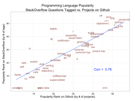
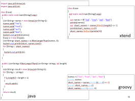

Introducing Kotlin
Module Overview
Programming Language Evolution
Programming Language Convergence
Introducing Kotlin
Eamonn de Leastar, WIT
Module Overview
Programming Language Evolution

Programming Language Convergence
